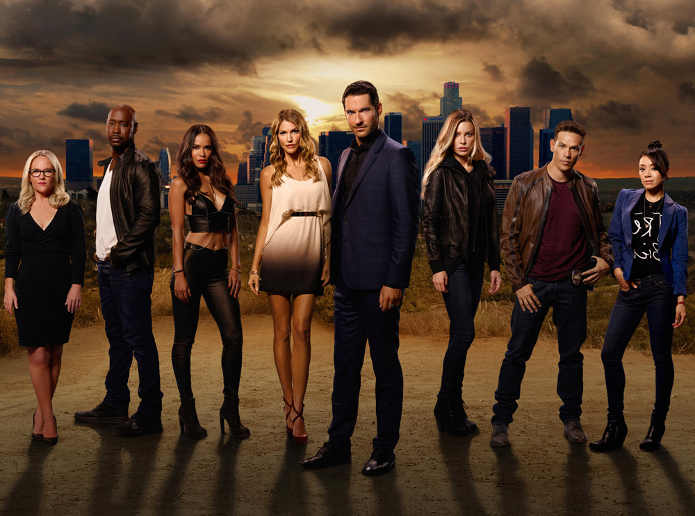

LUCIFER


The Devil is bored with hell and has decided to come back to earth to a new life in LA where he inadvertently becomes a consultant for the LAPD. Funny, sharp and witty as hell, Lucifer is a must if you like your reality to have a healthy does of fantasy thrown in.
If you haven't caught the Lucifer bug then it's time you did. One of the very few tv programs that will have you bingeing from morning to night, Lucifer Morningstar (Tom Ellis) is the original fallen angel that has decided he is thoroughly fed up with hell. He gives up his throne in the underworld and decides to come back to earth where he ironically decides to settle in the City Of Angels (Los Angeles).
While overindulging in the excesses of life, Lucifer still retains some of his otherworldly powers which allows him to ‘grant favours' until one of his recipients is murdered outside of his upscale nightclub. For the first time in billions of years, the murder awakens something unfamiliar in Lucifer's soul that is eerily similar to compassion and sympathy and he quickly pairs up with the investigating detective, Chloe Decker (Lauren German), which starts the partnership the show revolves around.
Lucifer has it all. It's witty, brilliantly cast with Tom Ellis (The Secret Of Crickley Hall) and Lauren German popping off the screen, clever in its storylines and character development and provides a heady mix of fantasy and reality that will have you intrigued and engaged from beginning to end. The supporting cast of Lesley-Ann Brandt, Rachael Harris, Aimee Garcia, Kevin Alejandro and D.B Woodside is inspired and brings together a real mix of personalities that elevate the show.

Lucifer covers a lot of genres – crime because there's a new murder in each episode, fantasy because you have to believe he's the Devil, comedy because of its clever and sharp one-liners, drama because of the relationships between the various characters and romance because of the will-they-won't-they that plays out between Lucifer and Decker over the seasons.
It's an excellent combination of all of the above. But the road to getting the full Lucifer story didn't run smooth.
The first three seasons were aired on FOX . Season three ended on an almighty cliffhanger and then FOX shockingly cancelled it (insert appropriate crying and angry faced emoji's here). Thankfully Netflix bought the rights to it and created season 4 and season 5.
It was all supposed to end there but fans of the show caused an almighty fuss and Netflix gave in, creating the sixth and final season which thankfully wrapped up the entire story.
Is Lucifer Worth Watching?
In a word, yes. However as Netflix only picked up the creation of seasons 4, 5 and 6, the first three have to be watched on Amazon Prime.
But other than that little stumbling block, watching the Guardian of Hell swan around Los Angeles among unsuspecting friends and colleagues is brilliant. Tom Ellis exudes charm and his embedded role as side-kick consultant to Detective Chloe Decker is played out throughout all six seasons.
Is There A Season 6 Of Lucifer?
Yes, there is. Season six dropped in September 2021 and it was the final season of the show. There are a lot of episodes to get stuck into and they breakdown as follows:
Lucifer Season 1 – 13 episodes (Amazon)
Lucifer Season 2 – 18 episodes (Amazon)
Lucifer Season 3 – 26 episodes (Amazon Prime)
Lucifer Season 4 – 10 episodes (Netflix & Amazon)
Lucifer Season 5 – 16 episodes (Netflix)
Lucifer Season 6 – 10 episodes (Netflix)
In total there are 93 episodes of Lucifer available to stream though you may have to pay for the first two on Amazon as they are not included with the Prime subscription.
Is Chloe Decker An Angel?
Without giving too much of the plot away, for those of you who haven't already watched the show. Chloe Decker is not an angel. At least not in the same way that Amenadiel is.
Amenadiel is played by D.B Woodside and he is Lucifer Morningstar's brother. He also happens to be God's favourite son and heir to the Kingdom of Heaven.
Over the course of the first couple of seasons, we do learn why Decker is so special and why she has such an effect on Lucifer.
Who Are the Cast Of Lucifer?
Plenty of famous faces pop in and out of Lucifer over the six seasons. However, the main cast is as follows.
Lucifer Morningstar is played by Tom Ellis, a British actor who hails from Cardiff, Wales. Already quite famous in the UK, he was known for his role of Gary Preston in the comedy Miranda starring Miranda Hart.
Lauren German plays Detective Decker of the LAPD and her biggest role prior to this series was as Leslie Shay in Chicago Fire. A Californian native, she also had roles in Hawaii Five-O and Happy Town.
D.B Woodside plays Amenadiel and his full name is David Bryan Woodside! He hails from New York and previously starred in Pearson, Suits and Single Ladies.
Kevin Alejandro takes on the role of Daniel Espinoza, an LAPD detective who used to be married to Chloe Decker. In the series, they have a daughter named Trixie but in real life, Kevin Alejandro is married to Leslie de Jesus. He directed three episodes of Lucifer including the season 6 premiere.
Born and raised in Cape Town South Africa, Lesley-Ann Brandt immigrated with her family to Auckland, New Zealand in her late teens. She plays Mazikeen, a demon who accompanies Lucifer back to earth from hell. She nearly didn't get the role as it had originally gone to Lina Esco (S.W.A.T.) but when that didn't work out, Brandt was offered the role instead. We couldn't imagine anybody else playing our beloved Maze!
Therapist to the divine, Dr. Linda Martin is played by Rachael Harris. One of the few characters to have no otherworldly powers, Linda finds herself permanently trying to ‘fix' Lucifer. In real life, Harris is incredibly accomplished and used to be part of the famous Groundlings in LA and has also served as a teacher in the school.
And lastly, we have everybody favourite forensic scientist Ella Lopez played by Aimee Garcia. Garcia is known for her roles in Marvel's M.O.D.O.K., Rush Hour (tv series) and Dexter.
